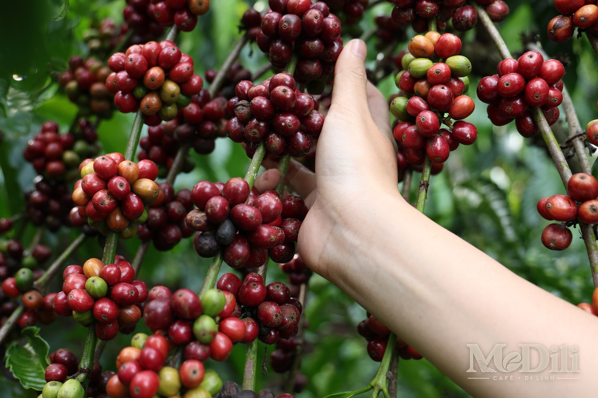

The Ripe Cherry Machine
A Robusta cherry in Di Linh needs about 9–11 months from flowering to ripeness. Drag the day slider to watch the cherry grow, the bean fill, the skin change color and the Brix rise; then try strip picking in one go or selective picking in several passes to see how the batch arriving at the mill differs.
Figure 2: inside the cherry, day by day
Drag the day slider in Figure 1 and the cross-section changes with it. The timeline follows compiled literature for Arabica; for Robusta, MeDili scales it by the same proportions because the literature has no separate milestones.
Figure 3: strip picking in one go or selective picking in several passes
400 cherries on a group of trees. Flowering follows the number of flowerings you choose, and each cherry ripens a few weeks earlier or later than others. The colored bands show the ripeness of the cherries on the trees by day; the dashed lines are the picking passes. This is an illustrative model, not farm measurements.

Selective picking: each pass takes ripe, overripe and dried cherries, plus a few half-ripe ones; the last pass strips whatever remains. Strip picking: everything on the branch is taken in a single day.
From leaf to bean: the sugar's path
The sweetness in a cup of coffee starts with the leaf, but sugar enters the bean and the pulp by two routes, at two different times.
Sun, CO₂ and water make sugar. Only with healthy leaves, and a tree not carrying too many cherries for its leaves, do the beans get enough nourishment.
Sugar travels through the tree as sucrose, to the flowers, cherries and growing beans.
In Arabica, around days 130–190 after flowering, the endosperm accumulates sucrose and storage proteins. At harvest, sucrose in the bean averages 9.4% of dry matter in Arabica and 6% in Robusta.
In roughly the last two months, the pulp builds up sugar quickly and the skin changes color. This is the sugar a refractometer measures.
Sucrose in the bean is almost entirely broken down in a medium roast, forming caramel and joining in the Maillard reaction. See the Aroma Precursor Machine.
MeDili reads it again
Six things about ripe cherries.
Brix belongs to the pulp, not the bean
A refractometer measures the sugar and solubles in the pulp juice. The bean receives sucrose from the tree through the vascular system during bean filling, around 130–190 days after flowering in Arabica. The pulp, by contrast, sweetens quickly in roughly the last two months. The two happen in different parts of the cherry, so a high Brix tells you the cherry is ripe but cannot measure the sugar in the bean.
Higher farms ripen more slowly; higher doesn't automatically mean more sugar
Every 100 m up, it's about 0.6 °C cooler, so the cherries ripen more slowly and the beans have more time to fill. A study of 16 Arabica lots on Réunion Island found that temperature during bean development determined chlorogenic acid and fatty acid content; glucose rose with altitude, but total soluble sugars did not change with climate. Sweetness in the cup also comes from ripeness, processing and roasting.
Robusta ripens more slowly than Arabica
Arabica needs about 6–8 months from flowering to ripe cherry; Robusta needs 9–11 months. So in Di Linh, flowers that open in March are only ready for picking in November.
Red is a sign, not a measure
As cherries ripen, chlorophyll in the skin falls and the red pigment anthocyanin rises. But some varieties ripen yellow, and a dark red cherry may already be overripe. Only looking at the color, squeezing for softness and measuring Brix together gives certainty.
Strip picking with green cherries is a double loss
Green cherries haven't filled their beans, so they weigh little and drag grassy, astringent notes into the whole batch. Stripping hard also breaks fruiting branches and knocks off leaves, so the next crop bears less. Selective picking takes more labor, but the batch is uniform and fermentation and drying are easier to control.
Overripe is a defect too
Cherries left too long on the tree, or picked and left overnight before pulping, have already started fermenting inside the skin. A batch with many of these easily picks up vinegary, boozy smells.
Measuring Brix in the field
Brix is a tool for choosing the picking day, not a quality score. Measure every pass and keep records; after a few crops, the farm will have its own thresholds.
- 1
Sampling
For each lot, choose 10 representative trees and take 10 cherries from mid-canopy on each, from all sides of the tree.
Tools, quantity100 cherries per lot
NoteDon't just pick the best-looking cherries.
- 2
Extract the juice
Squeeze a few cherries for pulp juice and put 2–3 drops on the refractometer prism to cover it fully.
Tools, quantityRefractometer 0–32 °Brix
NoteNo skin or bubbles in the juice.
- 3
Read and wipe
Read the °Brix, rinse the prism with clean water and blot it dry before measuring the next sample.
Tools, quantity5 readings per tree
NoteCalibrate to 0 with distilled water before each session.
- 4
Record
Record the date, lot, cherry color and °Brix, and average each lot.
Tools, quantityBrix log by lot
NoteRecord green and overripe cherries too, for comparison.
- 5
Compare with the cup
After a crop or two, compare the Brix at picking with the cupping score of each batch to learn the Brix range at which your farm tastes best.
Tools, quantityThe farm's own data
NoteEach variety and each lot has its own thresholds.
On the MeDili farm
Already doing
- Watering the whole lot evenly so it flowers at once and the next crop ripens more uniformly (The Farm in 12 Months).
- Splitting the harvest into 3 passes, from November to early January, with at most 5% green cherries per batch (Cherry Anatomy).
Worth adding
- Measure the Brix of 100 cherries per lot before each picking pass, recorded with the lot's flowering date.
- Pulp the picked cherries or put them on the drying beds the same day, never overnight.
- Float-sort before processing and set the floaters aside so they don't drag defect flavors into the good batch.
Compiled from multiple sources. Stage milestones follow compiled literature; ripening time changes with temperature using a simple model: 100 m higher is 0.6 °C cooler, and the cherries need correspondingly more time. The Brix curve, the spread of ripeness between cherries and the picking methods are illustrations, meant for understanding and as a starting point, not a replacement for farm measurements.
Distributor: DSunfood Food Co., Ltd., 143 Phạm Văn Hai, Phường Tân Sơn Nhất, Quận Tân Bình, TP.HCM.
Farm and roastery: Thôn 11, Xã Di Linh, Lâm Đồng.